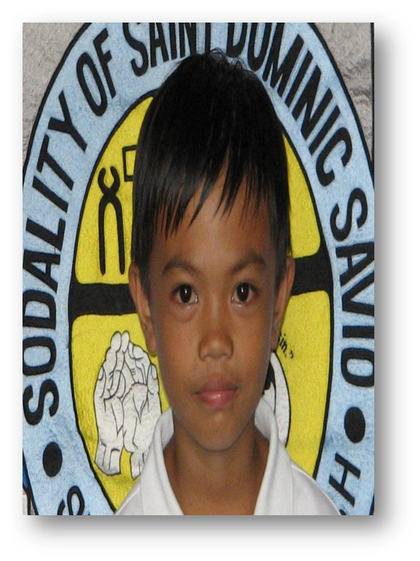
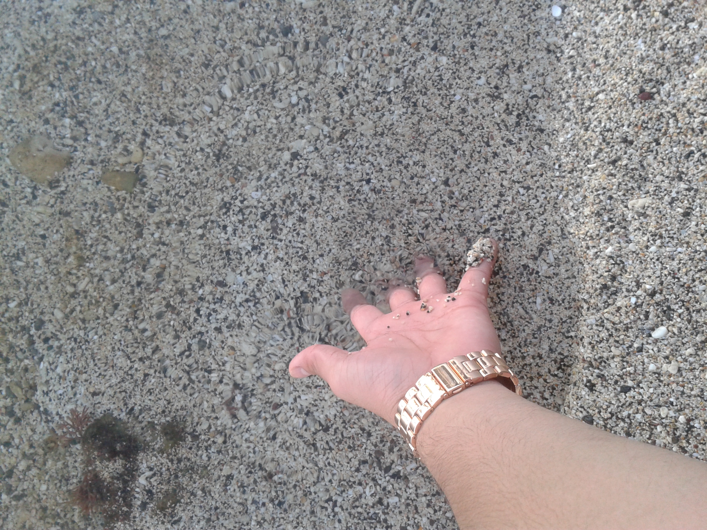
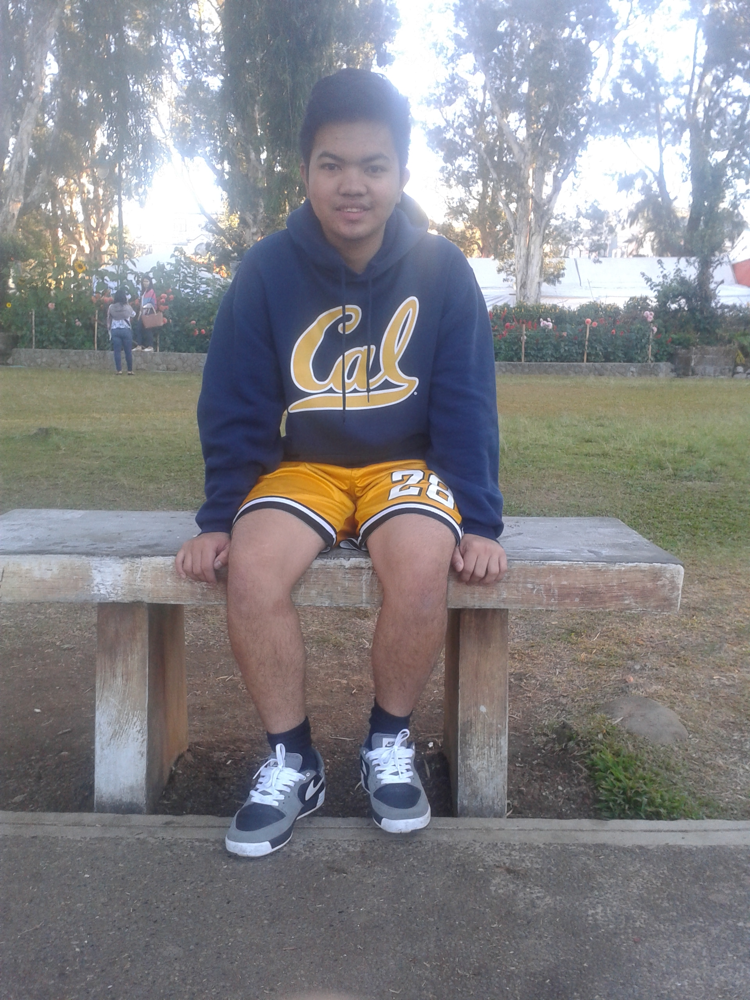

Info
Name: Landley Moncatar Bernardo
Birthdate: December 3, 1996
Birthplace: Puerto Princessa, Palawan
Address: P-2, San Antonio, Ramon, Isabela
Email: landleydgreat@gmail.com
Contact: 09358810051
Education
Elementary
 I graduated 2009 in School of Saint James Parish formerly known as La Salette Elementary School, Santiago City, Isabela. During my elementary days I can describe myself as small, shy and shy boy. I am not that active in school, all I wanna know is to play and play games like patintero, taya-tayaan,marbles, sipa and others, today this games already consider as a traditional or maybe classic as the computer games become popular. I don't care about academic and even extra-curiccular stuffs at that time. During the graduation I proudly to say I got a gold medal for loyalty award and also one recognition for the only organization that I joined that really challenge my determination. The SSDS, an organization for savio or sakristan.High School
In 2013 I grduated in University of La Salette High School, Santiago City, Isabela. In high school days my maturity really came in terms of both physically because of puberty and also mentally, because this time when I began to give importance for my study and for my future. High school also set as my turning point to afraid no more of people and try to speak for myself. When a teacher ask a question I immediately raising my hand to take an answer I really don't care what will be the consequences, my point is speak and talk about my thoughts in class. I feel like I already have a little bit of what they call confidence.I belong to the 3rd section for my entire high school years, consistent.
College
 Currently, I am enrolled in Saint Louis University in Baguio City. I am getting Bachelor of Science in Computer Science (BSCS), because I think this is for me, this is my world. Computer is my stuffs and this is what I want. College life is really challenging, far far different from elementary and high school. All the things that I failed to do in elementary and high school, serves as my lessons and guidelines for my college. I feel like I am different person now, because all my knowledge and perspective about things now is broader. I will continue to work hard and study smart and I will look forward for a better Landley Bernardo for the next years to come.
Currently, I am enrolled in Saint Louis University in Baguio City. I am getting Bachelor of Science in Computer Science (BSCS), because I think this is for me, this is my world. Computer is my stuffs and this is what I want. College life is really challenging, far far different from elementary and high school. All the things that I failed to do in elementary and high school, serves as my lessons and guidelines for my college. I feel like I am different person now, because all my knowledge and perspective about things now is broader. I will continue to work hard and study smart and I will look forward for a better Landley Bernardo for the next years to come.
Interest
Iam really fun of reading books because by reading I learned a lot and discover new informations that helps me to become better Computer Science practitioner. I read books when alone and when the place is in silent, usually at night, before going to sleep.
Lifestyle
As a young and a student, I have a daily routine that I strictly follow and based on my experience I can say that it improves me as person not only physically, but also mentally and spiritually and it makes me feel good and refesh everyday. I just started it recently. Every morning I do jogging for at least one hour before and make at least 20 push before going to class, then I eat a lot, particularly meat and rice followed by one banana. At night I eat moderate just a bread and a milk is enough. Usually I don't study a lot, I just read and I enjoy reading when the sorrounding is quite for me to focus and concentrate.
Travel
I love travelling, going to different places because everytime I travel I learned something and it makes my perspective broader. I just visited some few places in the Philippines, unfortunately I only have some pictures of it because others are already very old. I haven't visited places outside the Philippines and I wish I can, but anyway I can have many time and opportunities later on and first on my list are USA and UK.